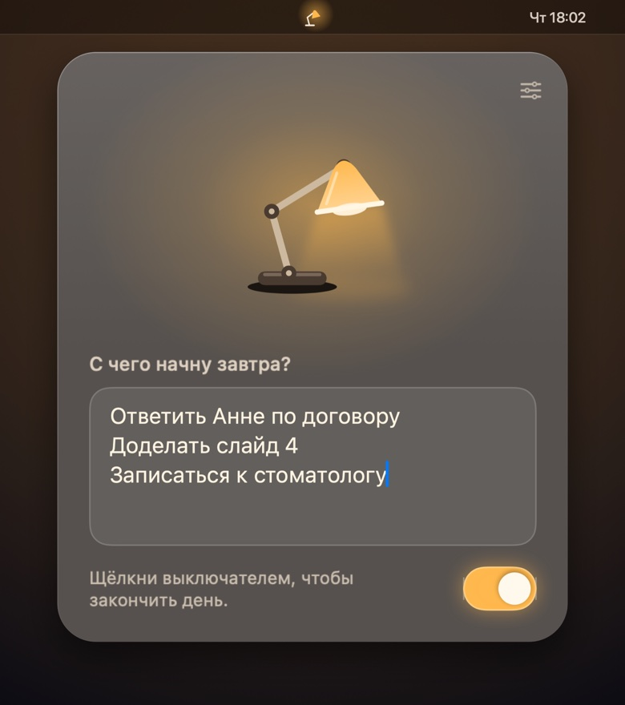
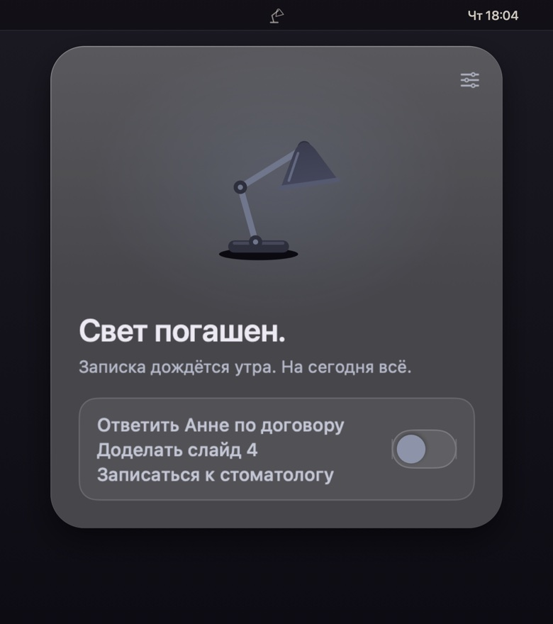
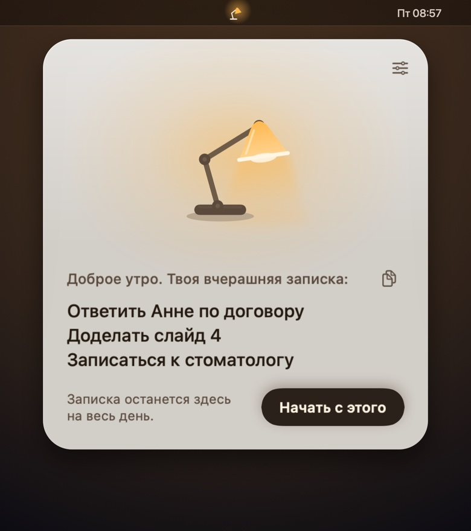
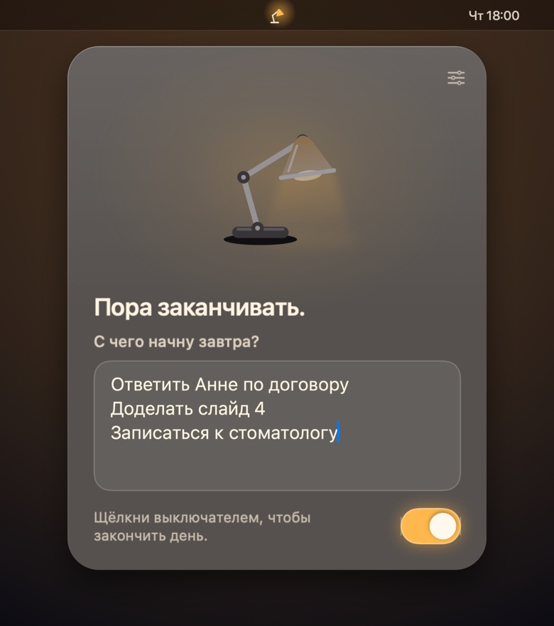
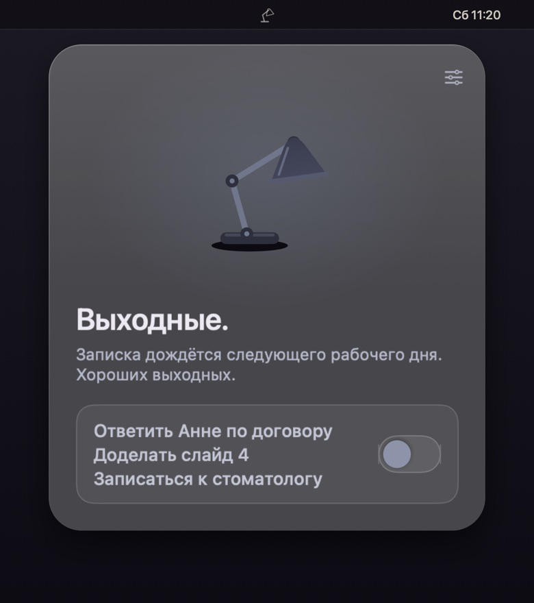
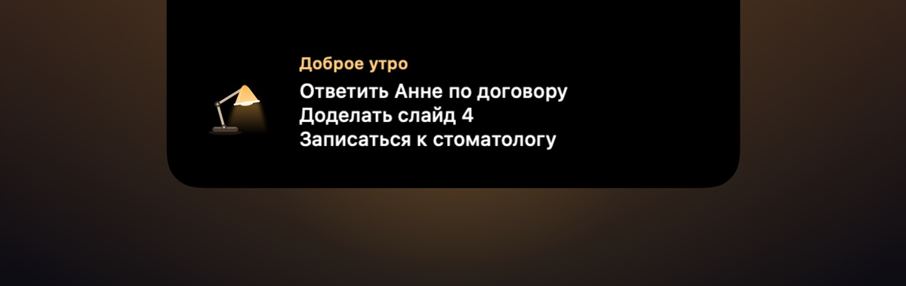

Закончите рабочий день одним щелчком.
Last Light — маленькая лампа в строке меню вашего Mac. Вечером вы записываете, с чего начнёте завтра, и щёлкаете выключателем. Свет гаснет, и работа вместе с ним.

Одна лампа, одна записка, один выключатель.
Незаконченная работа крутится в голове. Если записать следующий шаг и что-нибудь выключить, её можно отпустить.
Запишите, с чего начнёте завтра.
Строка или несколько. Выгрузите всё из головы в записку.

Щёлкните выключателем.
Лампа гаснет. У дня появляется конец, который чувствуется.

Записка уже ждёт.
Лампа загорается сама и показывает, с чего начать.
Тихая помощь, когда она нужна.
Всё это отключается в настройках.

Напоминание «Пора заканчивать».
В выбранное время лампа просит закончить работу. Маленькая лампа на рабочем столе горит тусклее, чем ближе это время.

В выходные лампа отдыхает.
Погасите её в пятницу, и она подождёт до утра понедельника. Без напоминаний.

Выберите свой свет.
Офисная лампа, лава-лампа или свеча. Семь цветов свечения или любой оттенок на выбор.

На MacBook записка выезжает из выреза камеры.
На других Mac и внешних мониторах она открывается из строки меню.
Только ваше.
Лампе не нужен логин.
Одна покупка
2,99 доллара, один раз. Без подписки и встроенных покупок.
Без учётной записи
Регистрироваться не нужно. Установили — лампа горит.
Остаётся на вашем Mac
У приложения нет доступа к сети, поэтому записки не могут покинуть ваш Mac.
Сегодня вечером выключите работу.
Для macOS 15 и новее. На русском и английском.